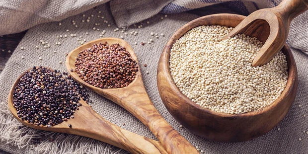
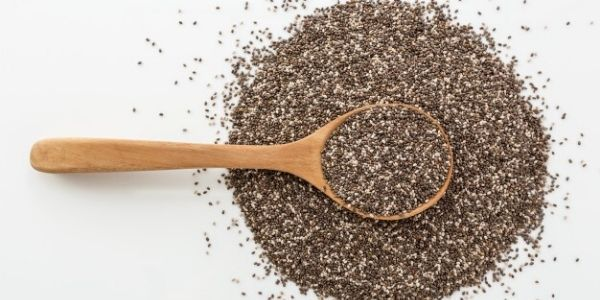
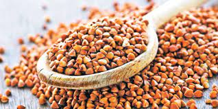
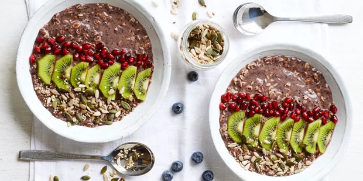

Why do we need protein?
Protein is an essential part of our nutrition, making up about 17% of the body’s weight and it is the main component of our muscles, skin, internal organs, especially the heart and brain, as well as our eyes, hair and nails. Our immune system also requires protein to help make antibodies that are required to help fight infections, and protein also plays a role in blood sugar regulation, fat metabolism and energy function.
Protein foods actually break down into 22 naturally occurring amino acids, which are known as the building blocks of protein. Of these, nine are known as essential amino acids, which means we must get them from food, as the body cannot make them itself. Protein is also a good source of a range of vitamins and minerals such as zinc and B vitamins. As a vegan, it’s important that all these amino acids are included in the diet to provide optimum nutrition.
The key to getting the right amount of protein, and all the necessary amino acids, is to combine different grains with different vegetables and pulses such as beans and rice, or tofu with broccoli. Variety is key when it comes to being vegan, and not using substitute products such as vegan cheese to make up any deficiency as they are technically a processed food and offer little health benefit.
How much protein should I eat?
The Reference Nutrient Intake (RNI) for an average adult is set at 0.75g of protein per kg of bodyweight per day. So an adult weighing 60kg needs 60 x 0.75g per day, which is 45g. A person weighing 74kg would need 74 x 0.75g per day, which is 55g.
High-protein vegan foods
Plant foods can be a great source of protein and of real benefit in helping to reduce animal proteins in the diet whether you are an omnivore, vegetarian or a vegan.
Please note – all gram weights below relate to the edible, cooked food.
1. Quinoa
Quinoa is a seed and you can find white, red, black or mixed varieties. 100g of quinoa (cooked weight) will provide almost 4g protein, but it’s also known as a complete protein which means it contains all 22 amino acids, making it a great alternative to carbohydrates such as rice and couscous.
2. Pulses
A pulse is actually an edible seed that grows in a pod, and this therefore includes all beans, peas and lentils. These make a great, low-fat and affordable source of plant protein and provide plenty of variety. Different pulses include:
- Lentils including Puy, green, and red: around 8-9g of protein per 100g
- Chickpeas, including hummus: 7g of protein per 100g
- Garden peas – around 7g per 100g
- Beans, including black-eyed, pinto, butter, cannellini, soya, edamame and kidney: between 7-10g protein per 100g
- Baked beans do count as a good source of protein but keep an eye on the salt content: 5g per 100g.
3. Nuts and seeds
Nuts and seeds are again very versatile and can be used with meals or as a snack to ensure adequate protein, and energy, is maintained throughout the day. Some of the best nut and seed proteins include:
- Hemp seeds >– 5g per heaped tablespoon
- Ground linseed >– 3g per heaped tablespoon
- Almonds> – 3g of protein for every six almonds
- Walnuts> – around 3g of protein for every three whole walnuts
- Pumpkin seeds> – 4g per tablespoon
- Pistachios> – just over 1g of protein over 10 pistachios
- Cashew nuts> – 3g per 10 cashew nuts
- Brazil nuts> – 4g per six Brazil nuts

4. Chia seeds
Just one tablespoon of chia seeds will provide almost 2g of protein, and they can be used in breakfasts, sprinkled over salads and soups, or as a healthy, protein-rich dessert. They also work as an excellent replacement to egg in vegan cooking as they are hydrophilic and will therefore expand when soaked in water for about twenty minutes.
5. Buckwheat
Buckwheat is actually a seed that is high in both protein and fibre, with 100g providing about 5g of protein, and it’s also gluten-free. Buckwheat is becoming increasingly popular and can be found as flakes, groats, pasta and flours making it an excellent addition to a vegan diet.
6. Oats
Whilst oats are a complex carbohydrate, providing slow energy release, they are also an excellent source of protein packing 10g per 100g.
7. Other grains
Some slightly less known grains can also be used to bump up your protein:
- Spelt – over 5g of protein per 100g
- Teff – over 4g of protein per 100g
- Amaranth – over 4g of protein per 100g
- Sorghum – over 8g of protein per 100g
8. Vegetables
Vegetables also offer a surprising amount of protein including:
- Asparagus – almost 2g of protein per six spears
- Avocado – over 1g per ½ an avocado
- Broccoli – almost 3g per 80g broccoli
- Brussels sprouts – around 2g per 80g Brussels sprouts
- Cauliflower – 1.5g per 80g serving
- Jerusalem artichokes – over 1g of protein per 80g
- Kale – almost 2g per 80g serving
- Spinach – 2g per 80g serving
- Sweetcorn – over 2g for every three heaped tablespoons